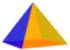
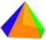
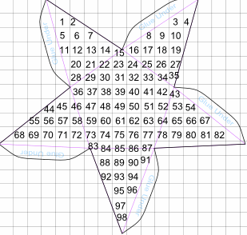
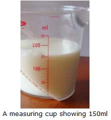
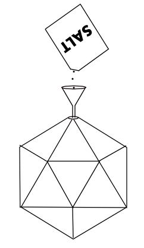

Investigating Solids
There are three parts to this activity:
1. Making models of the solids
2. Investigating Euler's Formula
3. Estimating surface areas and volumes
1. Making Models
You will make models of the solids below. They are all polyhedra and the first five of these solids are known as Platonic Solids.
You can make models of these solids using the templates below. You can print these onto paper - or better still use thin card, if your printer can take thin card. Otherwise glue the template onto thin card before you start cutting (you will see why I want you to use card later).
| Solid | Template | Details |
 |
Tetrahedron | Tetrahedron |
 |
Cube | Cube |
 |
Octahedron | Octahedron |
 |
Dodecahedron | Dodecahedron |
 |
Icosahedron | Icosahedron |
|  | Square Pyramid | Square Pyramid |
|  | Pentagonal Pyramid | Pentagonal Pyramid |
All you have to do is cut out the templates (including the tabs), fold along the lines, apply glue to the tabs and stick them under the adjacent face of the solid. It gets a bit tricky when you have to stick the final tab, but take your time and be careful.
For more tips on how to make your models go to Construction Tips.
Have fun!
2.
Investigating Euler's Formula
Once you've made all your models, count up the numbers of Vertices, Edges and Faces on each solid. You will have to find some way to mark them as you count them, so you don't miss any out or count some more than once. So, as you count them (using a felt-tip pen) mark each vertex with one color, each edge with a second color, and each face with a third color. When you've finished counting, fill in your answers in the following table:
| Solid | F Number of Faces |
V Number of Vertices |
E Number of Edges |
F + V − E |
| Cube | ||||
| Tetrahedron | ||||
| Octahedron | ||||
| Icosahedron | ||||
| Dodecahedron | ||||
| Square pyramid | ||||
| Pentagonal pyramid |
Complete the final column of the table by calculating the value of F + V − E in each case.
What did you find?
You should have got the same answer in each case.
This result is known as Euler's
Formula.
It applies to all Polyhedra.
Estimating Surface Area
If you look at the formulas for volumes and surface areas (given on the pages in the "details" column of the first table above), you will see that some of them are quite complicated. For example, for the dodecahedron the formulas are:
Dodecahedron:
Surface Area = 3×√(25+10×√5)
× (Edge Length)2
Volume = (15+7×√5)/4
× (Edge Length)3
Wow! They look pretty complicated, don't they?
So, let's see how we could estimate the surface areas and volumes using our templates or models:
Surface Areas
To estimate the surface areas, we could just use a grid and count squares.
But it is easier to do this using the template, isn't it? Can you see why? And can you see that the surface area of the solid is exactly the same as the area of the template? Just one thing though - we mustn't include the tabs. They're not part of the surface area, are they?
Example: Pentagonal Pyramid
I have used a 1 cm2 grid.

I estimate the surface area of the pentagonal pyramid to be about 98cm2
Use the same method to estimate the surface area of each of your solids.
Complete the following table:
| Solid | Estimate of surface area (cm2) |
| Cube | |
| Tetrahedron | |
| Octahedron | |
| Icosahedron | |
| Dodecahedron | |
| Square pyramid | |
| Pentagonal pyramid |
Estimating Volumes
In the activity Discover Capacity, you used a measuring cup to measure the capacities (or volumes) of different cups or containers.

Well, it
isn't a
good idea to try to fill our solids with milk or water, is it?
But we could use sand, or salt.
If you don't have any sand at your house, get a 500g or 1 lb packet of
salt.
But don't use the salt for cooking after you've finished with it!
Also get a small funnel to help you pour the salt. Then all you need to do is make a small hole in one of the vertices of your model and pour in the salt until it is full.
Perhaps you can see now why I told you to use card to make the solids. If you use paper the faces of the solid lose their shape and you won't get a good answer.
Here is an
example for
the icosahedron:

Then, pour the salt out from your solid into a measuring cup. The measuring cup may be callibrated in ml, but remember that a capacity of 1 ml is exactly the same as a volume of 1 cm3.
Make sure the surface of the salt is even.
Then read off the volume in the measuring cup as accurately as you can.
When I did this experiment, I found the amount of salt was 199 cm3, so the volume of my icosahedron was also estimated to be 199 cm3.
Do this for each of your solids (you can reuse the salt).
Complete the following table:
| Solid | Estimate of volume (cm3) |
| Cube | |
| Tetrahedron | |
| Octahedron | |
| Icosahedron | |
| Dodecahedron | |
| Square pyramid | |
| Pentagonal pyramid |